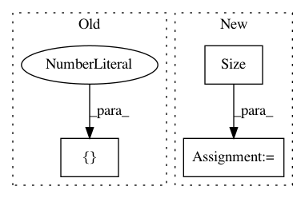

d8a075668b6e9cdf4c08f6c7285e5c7d2fbf5332,torch_geometric/graph/geometry.py,,edges_from_faces,#Any#,38
Before Change
return ValueError()
// Append undirected edges.
edges = torch.cat((edges, edges.index_select(1, torch.LongTensor([1, 0]))))
// Sort the adjacencies row-wise.
edges = edges.t()
After Change
// Build directed adjacency matrix.
adj = torch.sparse.FloatTensor(edges.t(),
torch.ones(edges.size(0)),
torch.Size([n, n]))
// Convert to undirected adjacency matrix.
adj = adj + adj.t()
// Remove duplicate indices.
// NOTE: This doesn"t work if transpose(...) is removed.
adj = adj.transpose(0, 1).coalesce()
In pattern: SUPERPATTERN
Frequency: 3
Non-data size: 3
Instances
Project Name: rusty1s/pytorch_geometric
Commit Name: d8a075668b6e9cdf4c08f6c7285e5c7d2fbf5332
Time: 2017-10-17
Author: matthias.fey@tu-dortmund.de
File Name: torch_geometric/graph/geometry.py
Class Name:
Method Name: edges_from_faces
Project Name: pyprob/pyprob
Commit Name: addf94ed7dd37459b8b72964713f28328ae699b1
Time: 2018-09-19
Author: atilimgunes.baydin@gmail.com
File Name: tests/test_distributions.py
Class Name: DistributionsTestCase
Method Name: test_dist_uniform
Project Name: pyprob/pyprob
Commit Name: addf94ed7dd37459b8b72964713f28328ae699b1
Time: 2018-09-19
Author: atilimgunes.baydin@gmail.com
File Name: tests/test_distributions.py
Class Name: DistributionsTestCase
Method Name: test_dist_normal_batched_2